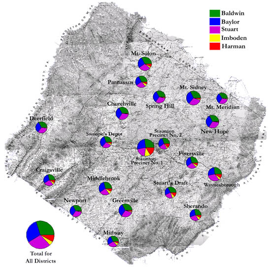

Augusta County: Election of Delegates to the Virginia Secession Convention, 1861
This map shows the overwhelming victory of Union over secession candidates in each precinct of Augusta in the February 1861 election for secession convention delegates. A slightly higher percentage in Staunton voted for secession candidates, but the overall Unionist pattern held true for the entire county.

The map is derived from a Jedediah Hotchkiss map of Augusta County, published in 1870 and based on surveys completed "during the war." The Hotchkiss map has been georeferenced at the Virginia Center for Digital History, using ESRI Arc Info to produce a Geographic Information Systems map and database of households.
Note: Original precinct boundaries are not available. Precinct boundaries were established in the GIS using Thiessen polygons around precinct stations as central places.